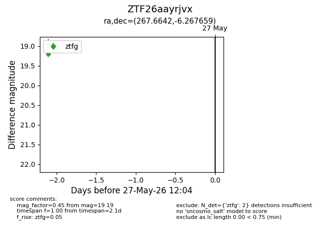
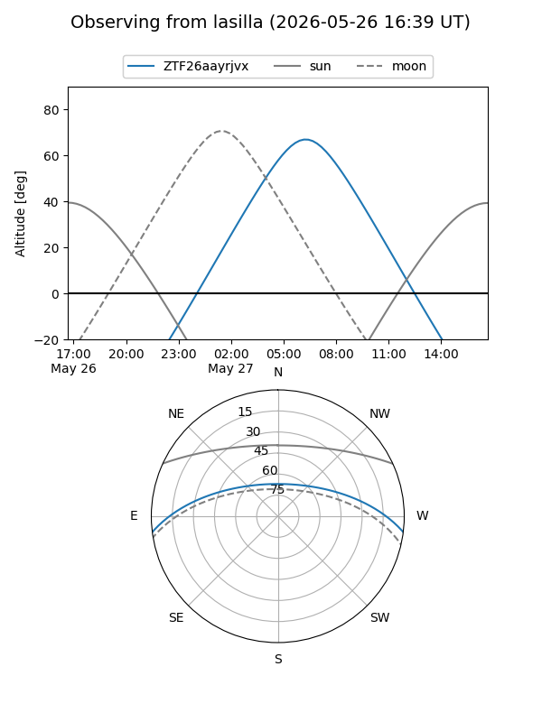
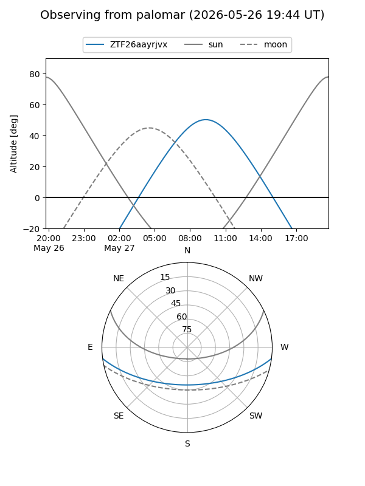

ZTF26aayrjvx
Target ZTF26aayrjvx at 2026-05-27 12:10
Aliases and brokers:
lsst-FINK: link
lsst-Lasair: link
lsst-ALeRCE: link
ztf-FINK: link
ztf-Lasair: link
ztf-ALeRCE: link
alt names
ZTF26aayrjvx (ztf,fink_ztf)
Coordinates:
equatorial (ra, dec) = 267.6642,-6.26766
equatorial (HMS+DMS) = 17:50:39.40,-06:16:03.57
galactic (l, b) = (20.2441,+10.49208)
Flags:
Photometry:
last ztfg=19.19
2 ztfg detections
Lightcurve

Visibility


Additional plots